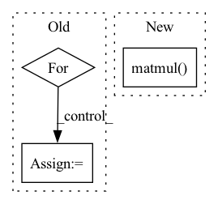

Pattern ID :33347

Before Change
edge_slice = edge.get_edge_slice()
neighbors_slice = edge.get_start_node_neighbors_without_end_node()[0]
messages_from_the_other_neighbors = to.zeros(node.features.shape[0]).to(self.device)
for reset_node_index in neighbors_slice:
reset_node = self._create_node(node_features, adjacency_matrix, reset_node_index)
reset_edge = self._create_edge(node, reset_node)
reset_edge_slice = reset_edge.get_edge_slice()
reset_gate_output = self._pass_through_reset_gate(messages, node, reset_edge, node_features)
messages_from_the_other_neighbors += to.mul(reset_gate_output, messages[reset_edge_slice])
return self.u_gru_current_memory_message[edge_slice].matmul(messages_from_the_other_neighbors)
def _pass_through_reset_gate(self,
After Change
neighbors_slice = edge.get_start_node_neighbors_without_end_node()[0]
return self.u_gru_current_memory_message[edge_slice].matmul(sum([to.mul(to.sigmoid(
to.add(
to.add(self.w_gru_update_gate_features[edge_slice].matmul(node_features[node.node_id]),
self.u_gru_update_gate[edge_slice].matmul(messages[node.node_id, reset_node_index])),
self.b_gru_update_gate)).long(), messages[node.node_id, reset_node_index])
for reset_node_index in neighbors_slice]))
In pattern: SUPERPATTERN
Frequency: 3
Non-data size: 3
Instances
Fragment ID: 96075802
Project Name: kovanostra/message-passing-neural-network
Commit Name: 46b48a64ed3b792489f1ffde06ae212a7af5471a
Time: 2020-05-02
Author: kovanostra@gmail.com
File Name: message_passing_nn/model/graph_encoder.py
M Class Name: GraphEncoder
N Class Name: GraphEncoder
M Method Name: _keep_or_reset_messages(5)
N Method Name: _keep_or_reset_messages(6)
M Parent Class: nn.Module
N Parent Class: nn.Module
M File Name: message_passing_nn/model/graph_encoder.py
N File Name: message_passing_nn/model/graph_encoder.py
M Start Line: 198
M End Line: 208
N Start Line: 203
N End Line: 210
'>
Before Change
edge_slice = edge.get_edge_slice()
neighbors_slice = edge.get_start_node_neighbors_without_end_node()[0]
messages_from_the_other_neighbors = to.zeros(node.features.shape[0]).to(self.device)
for reset_node_index in neighbors_slice:
reset_node = self._create_node(node_features, adjacency_matrix, reset_node_index)
reset_edge = self._create_edge(node, reset_node)
reset_edge_slice = reset_edge.get_edge_slice()
reset_gate_output = self._pass_through_reset_gate(messages, node, reset_edge, node_features)
messages_from_the_other_neighbors += to.mul(reset_gate_output, messages[reset_edge_slice])
return self.u_gru_current_memory_message[edge_slice].matmul(messages_from_the_other_neighbors)
After Change
neighbors_slice = edge.get_start_node_neighbors_without_end_node()[0]
return self.u_gru_current_memory_message[edge_slice].matmul(sum([to.mul(to.sigmoid(
to.add(
to.add(self.w_gru_update_gate_features[edge_slice].matmul(node_features[node.node_id]),
self.u_gru_update_gate[edge_slice].matmul(messages[node.node_id, reset_node_index])),
self.b_gru_update_gate)).long(), messages[node.node_id, reset_node_index])
for reset_node_index in neighbors_slice]))
'>
Fragment ID: 96075803
Project Name: kovanostra/message-passing-neural-network
Commit Name: 46b48a64ed3b792489f1ffde06ae212a7af5471a
Time: 2020-05-02
Author: kovanostra@gmail.com
File Name: message_passing_nn/model/graph_encoder.py
M Class Name: GraphEncoder
N Class Name: GraphEncoder
M Method Name: _keep_or_reset_messages(5)
N Method Name: _keep_or_reset_messages(6)
M Parent Class: nn.Module
N Parent Class: nn.Module
M File Name: message_passing_nn/model/graph_encoder.py
N File Name: message_passing_nn/model/graph_encoder.py
M Start Line: 198
M End Line: 208
N Start Line: 203
N End Line: 210
'>
Before Change
t = token_embeddings.shape[1]
position_embeddings = self.pos_emb[:, :t, :]
embed = token_embeddings + position_embeddings
for enc_layer in self.EncoderLayers:
embed = enc_layer(embed)
tkn_prd = self.Token_Prediction(embed)
return tkn_prd
After Change
embed = self.drop(self.ln(token_embeddings + position_embeddings))
embed = self.blocks(embed)
embed = self.Token_Prediction(embed)
logits = torch.matmul(embed, self.tok_emb.weight.T) + self.bias
return logits
'>
Fragment ID: 96075801
Project Name: dome272/maskgit-pytorch
Commit Name: 5042389656c05da20be7632a6169a7567a65891a
Time: 2022-04-22
Author: 61938694+dome272@users.noreply.github.com
File Name: bidirectional_transformer.py
M Class Name: BidirectionalTransformer
N Class Name: BidirectionalTransformer
M Method Name: forward(2)
N Method Name: forward(2)
M Parent Class: nn.Module
N Parent Class: nn.Module
M File Name: bidirectional_transformer.py
N File Name: bidirectional_transformer.py
M Start Line: 88
M End Line: 95
N Start Line: 126
N End Line: 135
'>
Before Change
scene_1 = self.convScene_1(scene)
scene_2 = self.convScene_2(scene_1)
for i in range(dim_batch):
weight_read[i] = self.similarity(self.memory_past, state_past[:, i]).unsqueeze(0)
// weight_read[torch.arange(dim_batch)] = self.similarity(self.memory_past, state_past[:,torch.arange(dim_batch)]).unsqueeze(0)
index_max = torch.sort(weight_read, descending=True)[1].cpu()
After Change
// Cosine similarity
past_normalized = F.normalize(self.memory_past, p=2, dim=1)
state_normalized = F.normalize(state_past.squeeze(), p=2, dim=1)
weight_read = torch.matmul(past_normalized, state_normalized.transpose(0,1)).transpose(0,1)
index_max = torch.sort(weight_read, descending=True)[1].cpu()
'>
Fragment ID: 96075812
Project Name: marchetz/mantra-cvpr20
Commit Name: 433bba3b3cf57d5cf7723c46a7fcfd17c1bac858
Time: 2019-07-28
Author: fede.becat@gmail.com
File Name: models/model_memory_single.py
M Class Name: model_memory_single
N Class Name: model_memory_single
M Method Name: forward(3)
N Method Name: forward(3)
M Parent Class: nn.Module
N Parent Class: nn.Module
M File Name: models/model_memory_single.py
N File Name: models/model_memory_single.py
M Start Line: 118
M End Line: 139
N Start Line: 134
N End Line: 136